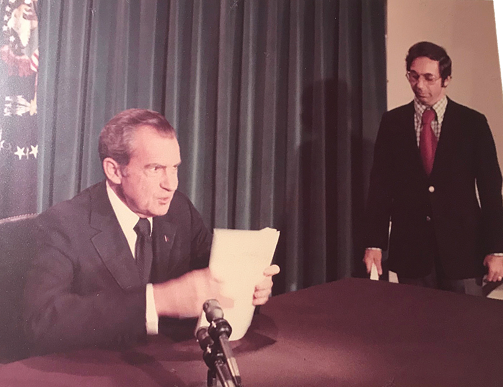
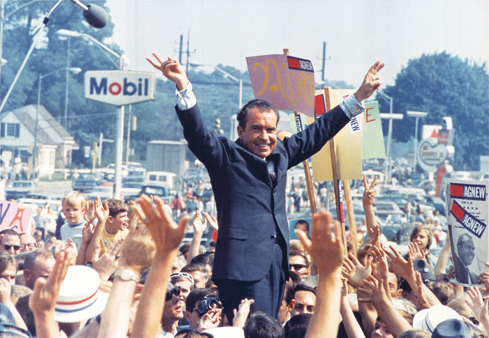

Legacy and Impact
Resignation and Aftermath
Nixon’s resignation in 1974 due to the Watergate scandal left a lasting impact on public trust in government.

Foreign Policy Influence
Despite his downfall, Nixon’s diplomacy, particularly with China and the Soviet Union, shaped global relations for decades.
Modern Political Influence
Nixon’s presidency redefined political campaigns, media relations, and government transparency expectations.
